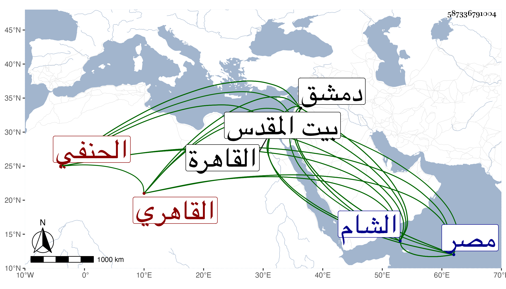

0902Sakhawi.DawLamic.ITO20230111-ara1.EIS1600.587336791004
Biography ID: 587336791004
623
أحمد بن محمود بن محمد بن عبد الله الصدر بن الجمال القيسري الأصل القاهري الحنفي ويعرف بابن العجمي . ولد سنة سبع وسبعين وسبعمائة واعتنى به أبوه فأقرأه القرآن وصلى به قبل استكماله إحدى عشرة سنة في البرقوقية أول ما فتحت سنة ثمان وثمانين وكذا أقرأه الفقه والعربية والمعاني وغيرها وأحضر له المؤدبين والمعلمين من العجم وغيرهم إلى أن ترعرع وبرع في فنون وصار معدودا في الفضلاء ، وباشر التوقيع في ديوان الإنشاء ونظر الجيش بالشام والحسبة بالقاهرة غير مرة ونظر الجوالي ومشيخة الشيخونية وغير ذلك وتنقلت به الأحوال . ذكره شيخنا في أنبائه ، وكان بارعا فاضلا نحويا نقبها مفننا في علوم كثيرة مذكورا بالذكاء التام وحسن التصور وجودة الفهم حسن المحاضرة فصيحا بليغا مقداما مع الكرم والتواضع جالس المؤيد ونادمه وقتا واتفق أن المؤيد أرسل عسكرا ومقدمه الفخر بن أبي الفرج فرأى في المنام أن الفخر مكشوف الرأس فاغتنم لذلك وقصه على ندمائه فسكتوا إلا الصدر فإنه بشره بالنصر أخذا من قول الشاعر :
| أنا ابن جلا وطلاع الثنايا | متى أضع العمامة تعرفوني |
وكان كذلك ، وهو ممن قرض سيرة المؤيد لابن ناهض . مات بالطاعون في يوم السبت رابع عشر رجب سنة ثلاث وثلاثين ، قال المقريزي كان من فضلاء الحنفية وله معرفة جيدة بالنحو ، وقال العيني إنه حصل بعض مادة من العلوم يشارر بها الناس ولم يكن جميل المعاشرة ولذا كان أكثر الناس يكرهونه وولي وظائف عدة ولم ينفصل عن واحدة منها بخير ولا شكر ، ولي الحسبة في الأيام المؤيدية فخرج منها خائفا يترقب ونظر الجيش بدمشق فعزل عنه بالضرب والعصر والمصادرة ، ونظر المواريث في الأيام المؤيدية فخرج غير مشكور وكذا نظر الكسوة ، وآخر الأمر تولى مشيخة الشيخونية فأخذ من وقفها مقدار سبعين ألفا ومات وهي في ذمته وكذلك بقي في ذمته أشياء كثيرة لأناس معينين ، وكان الشمس بن الديري عزره تعزيرا ~ بالغا لكلامه في ابن عباس بل أراد المؤيد قتله حين شهد عليه أنه زنديق وما كفه عنه إلا مسطره ، ومن جملة ما صدر منه أن الناصر أودع عنده في بعض سفراته عشرة آلاف دينار فتصرف فيها ولم يبق منها غير شيء يسير فسلمه الناصر إلى ابن الهيصم فقاسى شدائد وتأخر عنده بعد أخذ كل شيء له ألف دينار وخمسمائة ولا زال يتوسل بالشفاعات عند الناصر حتى أطلقه وسكت ، وترجمه بعضهم فقال باشر التوقيع وقدم دمشق مع الناصر في الفتنة التمرية وتخلف مع المتخلفين فوقع في الأسر ثم تخلص وولي حسبة القاهرة مرتين وأكثر ثم قدم دمشق مع المؤيد متوليا نظر جيشها في أول سنة سبع عشرة فباشره سنة وتسعة أشهر ثم عزل ثم ولي حسبة الشام ثم ذهب إلى مصر واختص بالمؤيد فوقع بينه وبين ابن البارزي فعمل عليه حتى أخرج إلى القدس بطالا وهو في الترسيم فهرب من أثناء الطريق ولم يعلم خبره فاتهم ابن البارزي بقتله وليم ثم ظهر أنه رجع إلى مصر واختفى ، وأوذي صهره الولوي السنباطي بسبب ذلك كما سيأتي في ترجمته ثم لم يظهر حتى تسلطن الأشرف فظهر واتصل به ثم لما ولي التفهني القضاء في صفر سنة ثلاث وثلاثين وأعطى عوضه مشيخة الشيخونية وكان فاضلا في العقليات شاعرا كريما متلافا لا يبقى على شيء رحمه الله .
